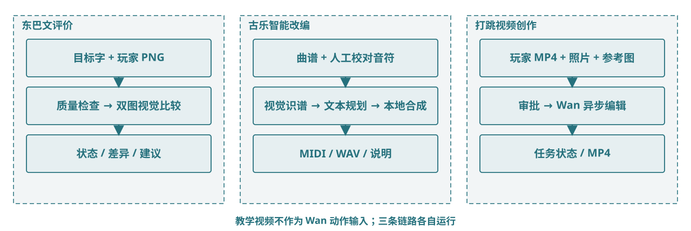

（四）创新性与独特视角跨学科视角：三类 Agent 各司其职
文化教育决定什么值得学，交互设计决定如何练，AI 工具提供新的反馈与表达媒介。三个 Agent 分别服务文字、音乐与舞蹈，不虚构统一总控 Agent。

证据与状态 当前 Qwen/Wan 接线与本地合成代码存在；真实模型输出质量与文化准确性仍需现场核验。
文化教育决定什么值得学，交互设计决定如何练，AI 工具提供新的反馈与表达媒介。三个 Agent 分别服务文字、音乐与舞蹈，不虚构统一总控 Agent。

证据与状态 当前 Qwen/Wan 接线与本地合成代码存在；真实模型输出质量与文化准确性仍需现场核验。